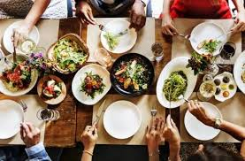

A continuación hay un formulario para hacer búsquedas.
Favoritos:

Y en colombia que?

fecha de publicacion: Octubre 10 de 2019 01:50
La Usina del Arte, uno de los centros culturales más importantes de la capital argentina, fue testigo de la entrega de los Latin America’s 50 Best Restaurants, elegidos por más de 250 expertos. Después de una elección en la que periodistas, críticos y chefs evaluaron aspectos como tendencias, responsabilidad con el medio ambiente, creatividad y uso de ingredientes locales, se eligieron por primera vez dos restaurantes colombianos entre los primeros 10 lugares. Se trata de El Chato (puesto 7), del chef bogotano Álvaro Clavijo y Leo (puesto 8), de la chef cartagenera Leonor Espinosa, quienes subieron en el ranking de 2018, donde ocuparon los puestos 21 y 10, respectivamente. Lo mismo pasó con el restaurante de Harry Sasson, que avanzó del puesto 23 al 22 en la competencia.
Exito de la comnida peruana?

fecha de publicacion: Octubre 10 de 2019 01:50
¿Por qué tiene tanto éxito la comida peruana? No hay una sola respuesta, pero yo me atrevo a señalar cuatro puntos relevantes que tienen validez para este fenómeno en Colombia. El primero es la diversidad de platos. La comida peruana tiene menús para todos los gustos, partiendo de una amplia variedad de potajes para los amantes de la comida del mar como el ceviche, el tiradito, la jalea, el pescado a la chorrillana, el pulpo al olivo, o el arroz con mariscos, entre otros. Pero también se destacan las diversas preparaciones de sopas, entre ellas la parihuela, el chupe de camarones, la sopa wantan, la criolla, o el caldo de gallina. Y hay otros platos emblemáticos, como el lomo saltado, el ají de gallina, el tacu tacu, los anticuchos o el rocoto relleno; y también hay opciones para los vegetarianos, como la papa a la huancaína, la ocopa, el arroz chaufa virgen y la causa de vegetales.